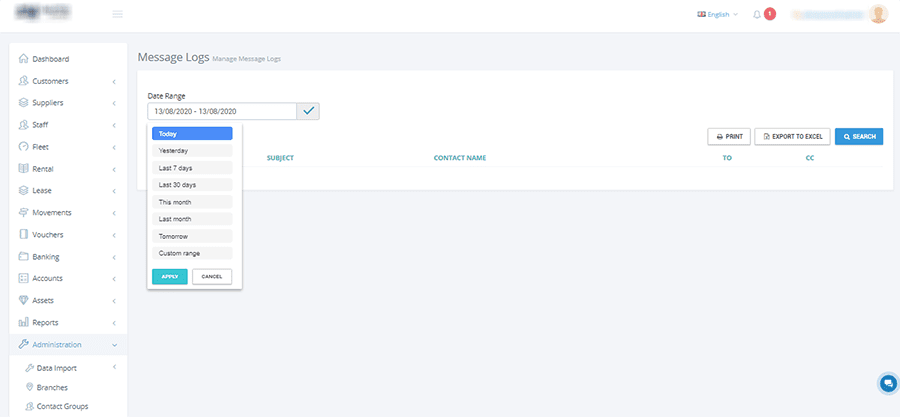

How to manage Message Logs?
Go to the panel on the left side, scroll down to the Administration module and click on it.
Scroll down and click on the Message Logs module.
Select a date range and click on the SEARCH button.
You can export or print this data as well.
Click HERE if you have a query or an issue
